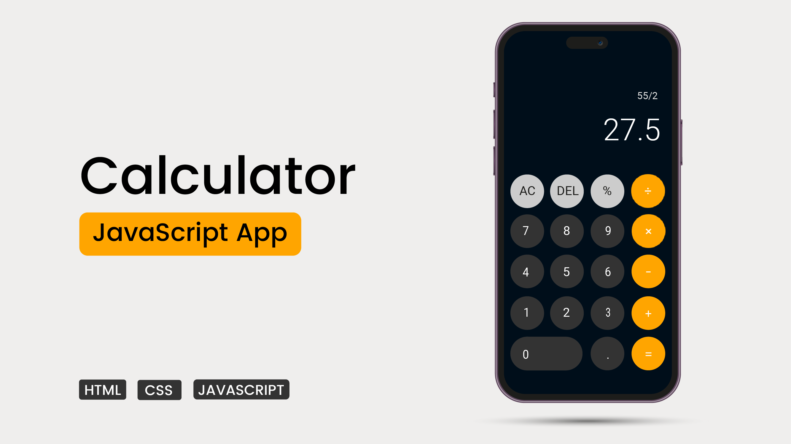

Calculator
A button-driven calculator built to practise managing input state and handling edge cases.

Why I built it
A calculator looks simple until you try to build one. The challenge is not the arithmetic; it is deciding what each button press means depending on what came before it. I built this project to practise managing state across many small interactions.
What it does
- Digits, decimal point and the four basic operations
- A clear button to reset the calculator
- A display that shows the number currently being typed
- Handling for edge cases such as dividing by zero
How it works
Three pieces of state. A calculator needs to remember the first number, the chosen operator and the number currently being typed. Every button press updates one of these.
Operations as a function. Once the two numbers and the operator are known, a single function performs the calculation.
function calculate(a, operator, b) {
switch (operator) {
case "+": return a + b;
case "-": return a - b;
case "*": return a * b;
case "/": return b === 0 ? "Error" : a / b;
}
}Evaluating input safely. A common shortcut in browser calculators is to build a string and pass it to eval(). That executes arbitrary code, so handling operators explicitly as above is the safer approach.
Screenshots

Technical lessons
- State machines hide in everyday interfaces. What a key press does depends on the current state, which is the idea behind many larger programs.
- Edge cases take most of the time. Multiple decimal points, an operator pressed twice and division by zero each needed their own handling.
- Floating point surprises. 0.1 + 0.2 does not display as 0.3 without rounding, a reminder that computers store decimals approximately.
What I would improve next
- Add keyboard support
- Add a calculation history
- Support percentages and a sign-toggle button